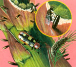

These two closely related beetles are similar in size, 1/4-to 1/3-inch long, but they have slightly different appetites for asparagus plants. Both can bear a minimum of two generations during each growing season and, in warm climates, up to five generations.
The asparagus beetle, Crioceris asparagi, is the most likely to eat the plant part that the human gardener also relishes. Overwintering as an adult, this bug bears four white or yellowish spots on its wings, is reddish underneath and on the wing edges, and has a dark-red thorax. Noticeable antennae run half the body's length.
In early spring, just as the asparagus is breaking the surface, the adult beetles emerge, hungry from overwintering in plant debris. They begin feeding on the earliest spears and soon mate. The females lay tiny, dark, linear eggs on the asparagus at right angles to the foliage. Adults dine on the main spears; grey/green-colored larvae feed on the lighter foliage.
Indentations caused by the feeding are brown in color and will decrease the vigor and size of the spear. Severe feeding weakens the root system, reducing the plant's vigor.
The spotted asparagus beetle, Crioceris duodecimpunctata, is as pretty a bug as you would ever want to see. In the western United States, this beetle is bright pumpkin orange with tiny black dots on its wings-reminiscent of a Mayflower moving van; in other areas, this beetle can be red or dark red. The antennae also measure about half its body length.
The adult spotted asparagus beetles emerge at least a week later than the plain asparagus beetle. Later in the spring, they can be found all over the asparagus plants but usually they do only minor damage. The egg-laying cycle is timed to coincide with berry-formation on the plant; the larvae enter several berries to feed before dropping to the soil to go into pupae and then adult stages. The larvae feed only within the berries, leaving the main spears for the gardener. As grubs, they are yellowish with black heads and legs.
Reduce populations of overwintering adults of both species by keeping the surrounding area lightly tilled and by eliminating plant detritus. This forces them to hibernate in soil, where subsurface predators eat them.
Both kinds of adults can be easily handpicked. A beetle's instinct is to drop to the ground when it feels disturbed, so hold a container of water under the plant before gently shaking it, and the bugs will drop into the water. A sheet or newspaper works well, too. The spotted beetles also will be discouraged if the asparagus planting is male-only cultivars that do not form seed berries.
In the summer of 2000, a pair of song sparrows raising a family in our garden found the spotted beetles particularly tasty. After a fairly large emergence of adult beetles, the two birds made daily visits to the asparagus bed and ate almost every single bug in our 80-foot row. Timing one bird, I counted as it ate 20 beetles in 60 seconds!
- John Stuart
Mother Earth News
|
 Tom Quirk The asparagus beetle, shown above, can be controlled by removing plant debris from the patch in fall. Larvae (lower right) and adults can be removed by hand. Beneficial wasps (in inset) will parasitize beetle eggs. |
|
|